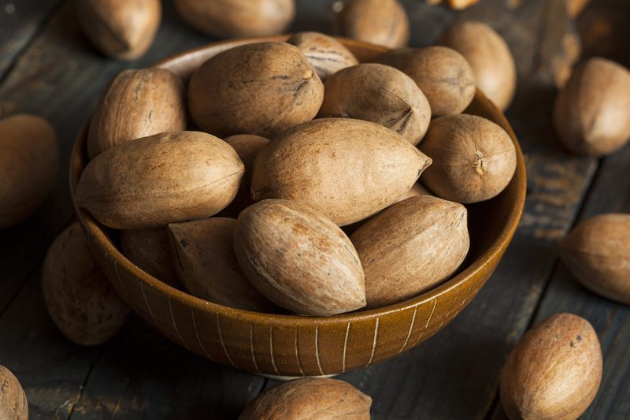
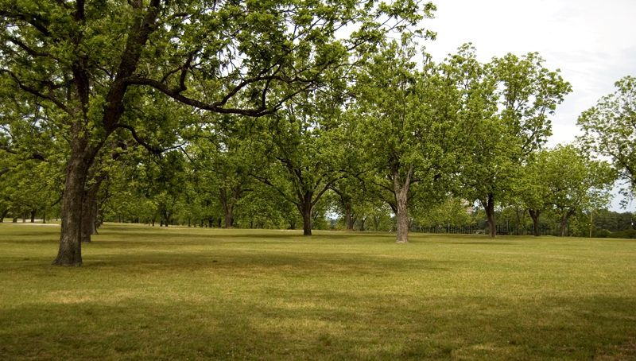
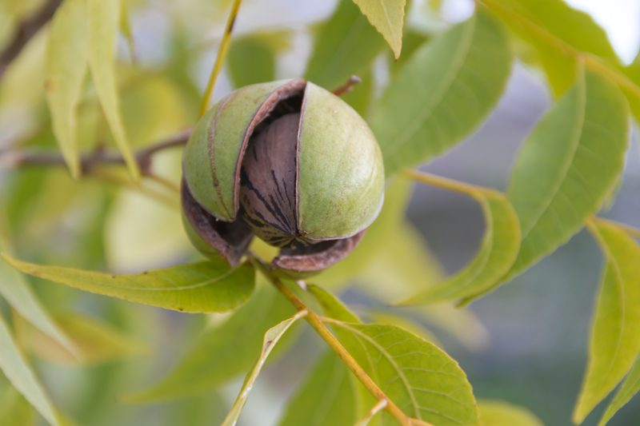
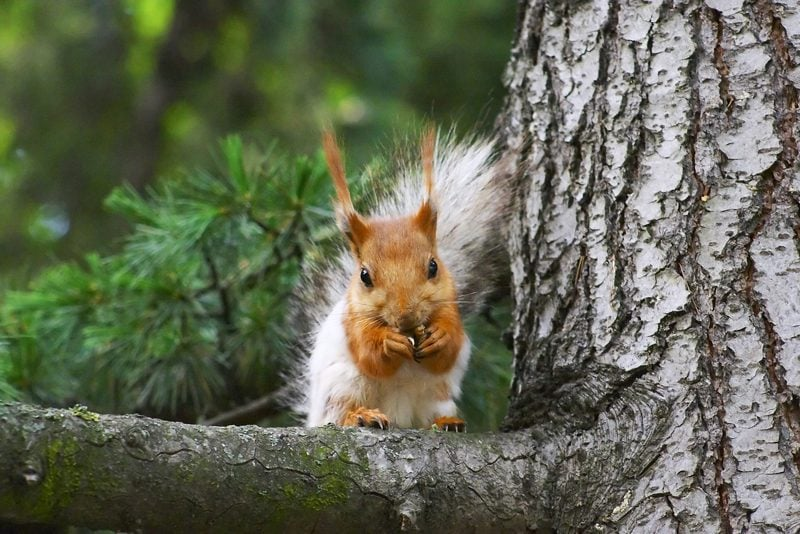

Did you know that there are over 500 different types of pecans? But out of all of those, the majority of pecan production comes from just a handful of varieties. And did you know the pecan is not actually a nut? It’s technically a “drupe,” a type of fruit in which a fleshy outer part surrounds a shell (or pit) with a seed inside, much like a peach. The word pecan means, “nuts requiring a stone to crack.”

Pecans are grown commercially in fifteen states in the southern U.S. including Alabama, Arkansas, Arizona, California, Florida, Georgia, Kansas, Louisiana, Missouri, Mississippi, North Carolina, New Mexico, Oklahoma, South Carolina, and Texas. Although, Georgia remains the top producer of pecans since the 1800s. If you live in these areas, do you have a pecan tree in your yard?

Pecans are grown in groves or orchards of trees
Groves are groupings of trees that are grown naturally, while orchards are defined as groups of trees planted by humans. When planting pecan trees, it takes anywhere from seven to ten years before a pecan tree begins to produce a full supply of nuts. But once the process starts, hold onto your green smoothies peeps because these trees can produce for a very long time, sometimes up to 300 years. Pecan trees are very large and are capable of reaching seventy or more feet in height and six feet in trunk diameter. Go ahead and hug THAT tree!
Pollination
Pecan trees have both male and female flowers on the same tree that are wind pollinated. Therefore, pollinators (i.e., bees) are not required to complete pollination. The male flowers form hanging catkins which can produce as many as 2.64 million pollen grains, and ONLY one pollen grain is required to produce one pecan. This means that just ONE catkin can produce enough pollen to pollinate flowers to produce 50,000 pounds of average-sized pecans. Well, holy pecans Batman, that information just sort of blows my circuits. So think about it, an average bearing tree is likely to produce several thousand catkins, thus further emphasizing how much pollen could be produced. The female flowers are arranged in tight clusters at the ends of the shoots, just waiting to be serviced.

Time to Harvest
Pecan trees begin to shed their nuts in the fall, prior to leaf drop. The nut forms inside a green husk that gradually browns as it dries and the nut matures. As the pecans mature, the husks begin to crack open, indicating the readiness of picking pecans. Once they are fully mature, they drop out of the husks and to the ground. Once the pecans fall, provided the ground is dry, they begin to dry and cure which improves their quality. Curing increases flavor, texture, and aroma of pecans.

One squirrel can eat up to 50 pounds of pecans in a year.
How They are Harvested
If the pecans don’t fall naturally from the tree, they can be encouraged to drop by knocking them from the tree with a long pole or shaking the branches. The key to harvesting pecans from the ground is to pick them up as soon as possible to avoid mold and to prevent ants and birds from hijacking your crop. Of course, if most of the pecans are still on the tree and in the husk… they are flat out NOT ready and need more time to ripen.
Once harvested, they need to be dried or cured before storing them. They are spread out in a thin layer on a plastic sheet in an area of low light and circulating air as they dry slowly. Depending upon conditions, drying can take between two to ten days. Properly dried pecans will have a brittle kernel and should separate easily from its exterior.
Of course, if a person is doing this on a much larger scale, there are other methods put in place when harvesting time rolls around. If you would love to see some of this in action (as I did), please click (here) to watch a short video on how this process works.
Don’t Limit Yourself to just the Nut
Pecan Wood
- The wood from the pecan tree is used in making furniture and in hardwood flooring.
- As sunlight interacts with pecan wood, it takes on an amber or reddish-brown hue over time, much like cherry wood.
- The color variation of pecan wood results in a dramatic and distinctive coloration that imparts a rustic appearance to the unstained wood.
- The grain is typically straight and fine; the wood may have a few knots.
Pecan Oil
- Pecan oil has a buttery, nutty flavor, which adds a rich and satisfying layer to salad dressings and dips.
- You can make your own dressing by using cold-pressed pecan oil as a base, then complimenting it with the addition of balsamic vinegar, honey, maple syrup, herbs, and seasonings to create unique vinaigrettes.
- Pecan oil can replace butter or olive oil. Pecan oil’s ‘smoke point’ is 470 degrees F, which means that as long as it stays below that temperature, it won’t oxidize.
- Use it on your skin. Pecan oil is rich in nutrients such as zinc, folate, phosphorus, and vitamins A and E, this oil is a warrior for your skin. Add a drop or two of oil to your face cream, mix them in the palm of your hand, and smooth it onto your face.
- Use it on your hair. Use pecan oil as a hair treatment by rubbing it into scalp and roots and leaving it for a few hours or even overnight. Since it contains amino acid L-arginine and iron, it helps to encourage the growth of healthy hair. Hair follicles need proper nutrient intake in order for strong and healthy hair to grow.
- Source
The Shells have Purpose too!
Mulch and Compost – If you shell your own pecans, allow them to dry out and mix them with other organic matter, creating a mulch for flowering plants such as azaleas and blueberry bushes. This mulch provides moisture retention.